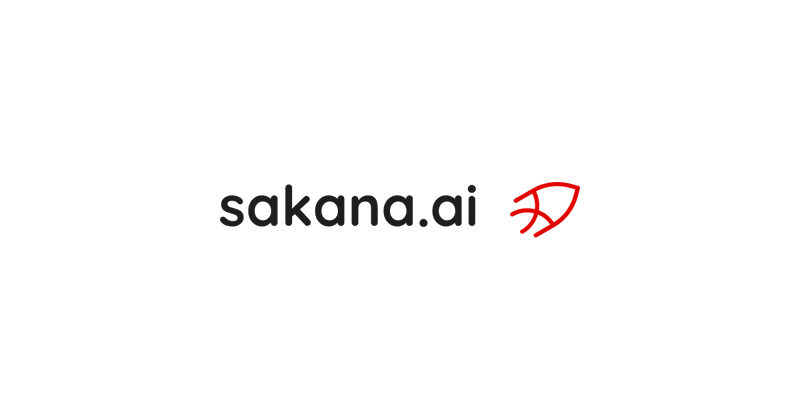
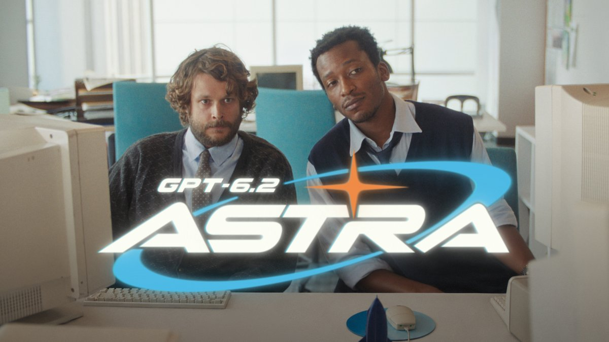
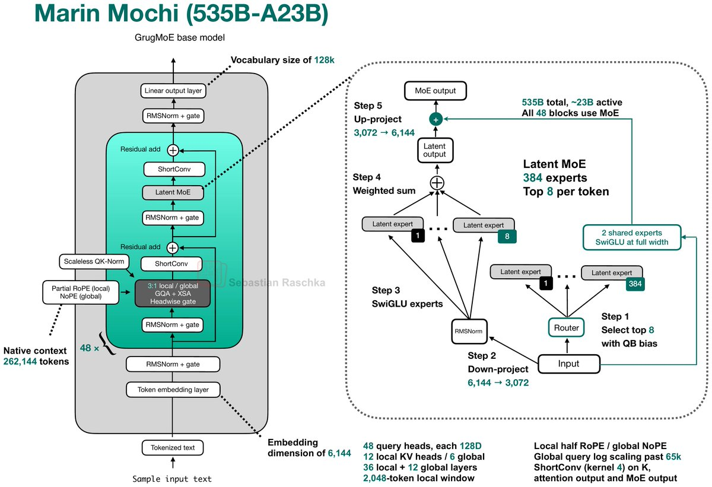
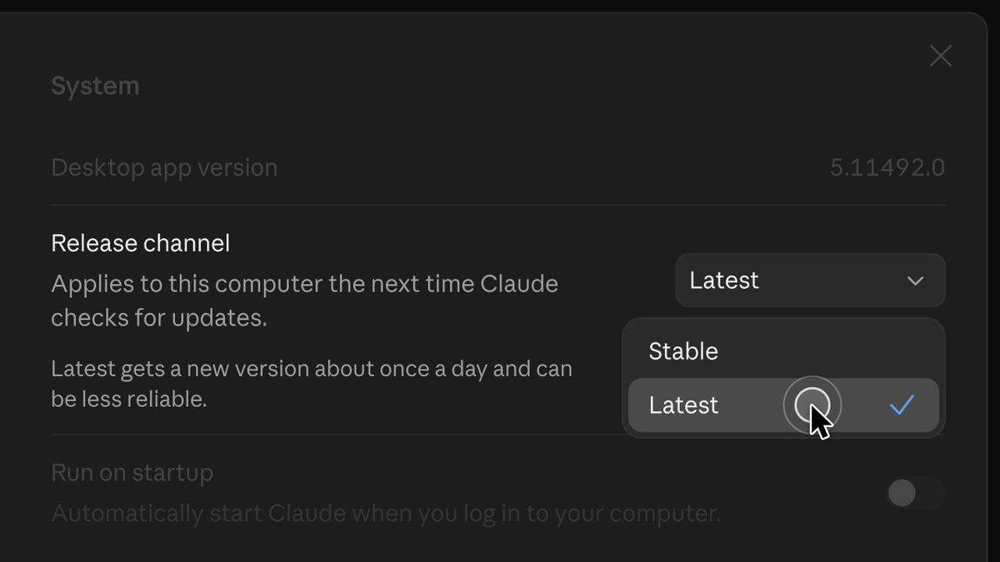
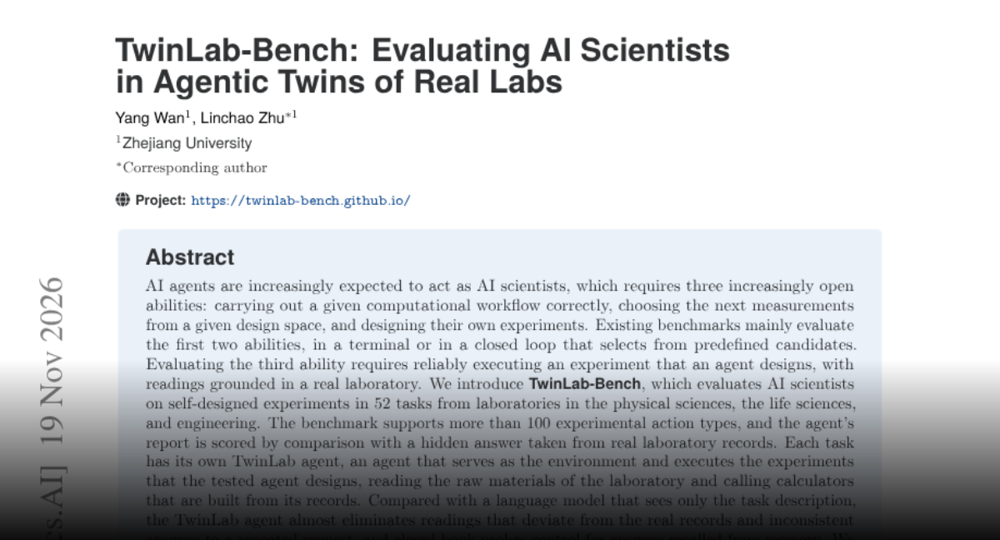

01
Anthropic 宣布完成每股 83 美元的首次公开发行

Anthropic 宣布完成首次公开发行，以每股83美元发行11.27亿股A类普通股，其中包括承销商全额行使的1.47亿股额外购买权。公告亦涉及同期私募配售。这是公司的重要融资里程碑；发行条款描述的是交易本身，不等于后续股价或投资者收益。
每天一次，过滤 AI 噪音
Anthropic 宣布完成首次公开发行，以每股83美元发行11.27亿股A类普通股，其中包括承销商全额行使的1.47亿股额外购买权。公告亦涉及同期私募配售。这是公司的重要融资里程碑；发行条款描述的是交易本身，不等于后续股价或投资者收益。
OpenAI介绍Performance Factory：利用Codex工作流寻找并修复性能问题，保持ChatGPT响应速度。这将编程智能体用于持续运维，而不只开发新功能。采集摘要说明了系统目的，但没有提供延迟改善、成本节省或每次修复的具体审查控制。
OpenAI发布Daybreak Red受监督安全调查参考架构，涉及安全控制、配置与监控。部署安全智能体不仅涉及模型，也包括外围控制。采集说明没有列出全部控制措施或有效性指标，应将其作为待研究的实施指南，而不是默认安全的证明。

《卫报》报道，Anthropic创纪录的IPO未能阻止更广泛的AI股票抛售，全球股市走低。市场反应与公司融资完成是不同的事件，反映投资计划与投资者信心之间的关系。采集到的标题支持市场下跌这一事实，但不足以据此给出精确损失或未来走势预测。
Hacker News链接的一篇论文被描述为Anthropic员工提出的黎曼猜想一般性证明，采集时获得909分和565条评论，是本次HN最高分条目。这是重大数学声明，并非已经验证的成果。现有元数据也无法证明该证明由AI生成，需要等待独立数学审查。

Architect Labs将Frostbite介绍为由AI发现、设计和验证的新CPU架构。采集时该消息在HN获得417分和255条评论。它将AI工程的讨论从软件扩展到处理器架构；现有材料未说明流片状态、生产成熟度或相对性能，这些仍需进一步验证。

IEEE Spectrum报道Epic Games将AI编程用于虚幻引擎。大型游戏引擎对生成代码提出较高要求，修改必须融入既有系统并服务下游开发者。现有标题能够支持采用AI编程这一消息，但没有提供量化的生产率或质量结果。这体现AI编程进入复杂商业软件开发。
一篇文章认为，停止亲自写代码也会削弱代码审查能力。随着AI编程工具让工程师更多地评估生成的修改，这一观点值得团队关注：委托实现工作的同时，如何保留识别错误所需的实践知识？这属于作者论点，采集元数据并未提供可验证的因果测量。

Sakana AI宣布在东京成立独立、公益导向的Security Research Group，由Akihiro Umegai与公告作者共同领导。公告指出，AI正在改变网络攻防的速度和经济性，使安全成为日本的重要议题。这是具体的组织投入，但采集片段尚未列出项目、交付物或评测成果。

Google推出Gemini 4 Neon，定位为兼顾前沿智能与快速端到端任务完成的模型，面向编程、知识工作和科学任务。Google称其在xhigh设置下位列Artificial Analysis智能指数第三。这里引用的是厂商说法，采集帖子未提供完整独立比较或价格表。

Greg Brockman宣布GPT-6.2 Astra与Sol推出，强调专业工作、科学研究能力以及更低的单任务成本。这让完成有效工作的成本成为竞争指标之一。采集帖子较简短，没有列出价格表、评测方法或部署限制，采购与生产决策仍需这些细节。

可灵宣布Image 4.0上线，主打原生8K生成、真实细节、文字渲染与批量图像生成。这些能力对应高分辨率、可读文字和多输出的创作需求。该消息属于产品发布而非独立质量评测，实际采用仍需检查不同题材和版式中的效果。
Luma宣布平台已上线Ideogram 4.6，这是图像生成模型的渠道与工作流更新。采集公告没有介绍模型变化、价格或相对旧版本的差异，因此本次信息的核心是可用性，不能据此推断质量或生产率提升。
Runway在Inside View节目中介绍Praxis-1如何利用机器人所见内容指导下一步动作，将视频模型的角色从媒体生成延伸到物理控制。这与仿真和机器人共享表征有关，但该公告是讲解节目，并不是覆盖部署可靠性或任务范围的评测报告。

Jim Fan分享GR00T 2端到端控制真实灵巧手的演示，并称视频为自主执行、无剪辑、正常速度播放。这些信息有助于观察单次执行，但无法说明重复试验或多任务成功率，因此应视为能力展示而非普遍可靠性的证明。

Sebastian Raschka关注Marin Mochi 535B-A23B检查点发布及技术报告，强调训练稳定性与GPU吞吐量的架构取舍，并提到潜在混合专家设计和额外RMSNorm。其价值在于结合检查点审视工程设计；采集片段没有完整架构说明或独立性能比较。
Max Jaderberg介绍将Isomorphic Labs的AI方法及专有IsoDDE药物设计引擎，与MSD的数据和研发、制造经验结合的合作。它体现AI药物发现对生物数据及药企能力的依赖。采集公告未提供临床结果、具体候选药物或财务条款。

Claude Desktop在Windows和Mac提供可选Latest渠道，可在设置中切换。官方称其更早提供修复和改进，但可靠性可能低于仍为默认值的Stable渠道。团队可据此在更早体验与版本稳定性之间做出选择。

Claude Platform推出联动计费测试版，让Factory、Linear、Ramp等工具用户通过自己的Claude Platform组织支付API用量，而无需分享API密钥。这将费用归属与交出可复用凭据区分开来，但公告未详述全部访问控制或计费规则。

Thomas Wolf介绍PyBot背后同时运行1000个智能体的实验，目标是研究集群能否在封闭实验室之外扩展，并以更透明方式开展研究。采集片段没有给出效率、任务成功率或计算成本，因此智能体数量本身不能证明有效扩展。

Coda-DaVinci研究智能体编写的三维代理如何改善视频控制：粗粒度代理有利于自然运动，中等粒度有利于一致性，并结合物理仿真与对齐提示。框架在代理引导与直接生成间选择，通过视觉检查和独立审查修复。论文报告指令遵循和物理合理性提升，但长视频仍存在过渡和场景约束问题。

TwinLab-Bench涵盖物理、生命科学和工程领域52个自主实验设计任务，利用真实记录与计算器支撑的实验室智能体，并提供超过100种实验动作。报告与隐藏的真实记录答案比较。作者称最强被测模型平均得分45.0，说明即使读数有依据，开放实验设计仍很困难。

TuringSpace包含125个需点击和拖拽的空间验证码任务。作者报告人类解决率94.1%，最强被测模型仍失败25.9%，常因误读截图。Qwen3.5-9B在该环境微调后成功率从1.6%升至33.1%，并在七个分布外基准改善。研究同时揭示推理可能维护错误视觉判断。

Depth Pro 2在原生分辨率下估计图像和视频的稠密度量深度，以单一可扩展网络兼顾单帧边界清晰度与多帧时间一致性。作者报告精度、清晰度、一致性与运行效率的改进，并发布代码和权重，适用于需要精细边界且避免视频深度闪烁的空间处理。

SpecWM是无需训练的流式世界模型推理框架，用目标模型的潜在速度场对快速草稿块执行接受、修正或拒绝，并复用验证信息进行纠正。作者报告在WBench Navigation上相对目标模型提速1.63倍并改善视觉质量，同时关注相机跟随和轨迹一致性。

NarrowSpec表明推测解码草稿模型可使用目标模型一半或四分之一的隐藏宽度，同时基本保持接受率。实验覆盖DFlash、EAGLE-3、两个目标模型和SGLang；批量为1时，B200提速1.06至1.12倍，GB10提速1.13至1.44倍，体现草稿架构本身的优化价值。

研究提出仓库级代码搜索基准Repo-Premium，认为部分稠密检索优势源于评测设置及查询缺少稀有代码标识符。用模型生成标识符扩展查询后，BM25在所有被测Python集合追平稠密检索。作者建议采用公平词法基线、融合两类检索，并补充代码术语。